All results and limitations · Fixed pretraining representation audit. These validation examples are selected post-hoc from seed42 errors/corrections; seed43 predictions are also shown. No examples were excluded from aggregate scoring. No silhouette/contact labels were invented.
Seed 42: B2 white_king; taller white_pawn · Seed 43: B2 white_king; taller white_pawn
Historical angle 60°, black_near_camera; assumed_pinhole_normal. Green outline is target ground square, not silhouette.
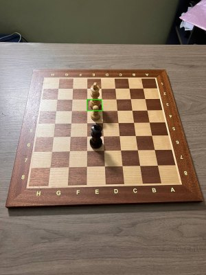
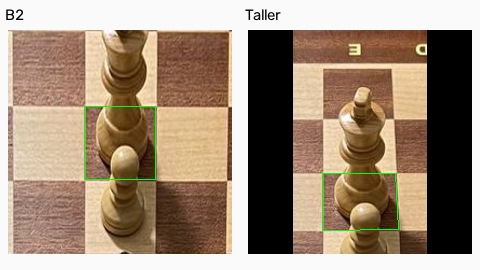
{
"42": {
"b2": {
"predicted_class_id": 6,
"probabilities": [
9.164314570239302e-06,
0.0026265604384365193,
8.31618784616544e-06,
0.0017377756336808333,
0.006485726308143913,
0.006936349460076055,
0.9821553214670442,
6.552545072743933e-07,
1.5216986423264957e-08,
4.754379080787633e-07,
6.980980631074023e-08,
3.0329001989445826e-06,
3.6537570794534406e-05
]
},
"taller": {
"predicted_class_id": 1,
"probabilities": [
0.00041282514603862967,
0.47967342171790867,
0.0031779296645090887,
0.08881841319942005,
3.223811553396513e-05,
0.00018221129620617379,
0.4276978996716172,
1.8773210446176288e-06,
1.201723149398235e-07,
2.6487336276469704e-07,
1.9903237400667984e-10,
9.999919630030643e-10,
2.797623019592168e-06
]
}
},
"43": {
"b2": {
"predicted_class_id": 6,
"probabilities": [
0.00012719700937719792,
0.06876392696852271,
5.710173687853337e-05,
0.004313244660659354,
0.0508554371845463,
0.006002963550422847,
0.8697135773116078,
2.2626918355687615e-06,
5.1162272236637427e-08,
5.928498507498387e-07,
2.3498223431523825e-07,
1.2808365936517425e-06,
0.00016212905519875085
]
},
"taller": {
"predicted_class_id": 1,
"probabilities": [
0.0002167584180764791,
0.4836343258407323,
0.00041251588774873505,
0.09317055889122874,
0.0001495605229542734,
0.0002989522178177529,
0.42177864830295786,
4.552344726478342e-05,
6.237196921012788e-06,
3.302763675845947e-06,
1.774132358937039e-08,
2.856304799939915e-08,
0.00028357020625046167
]
}
}
}Seed 42: B2 empty; taller black_king · Seed 43: B2 empty; taller black_king
Historical angle 60°, white_near_camera; image_up_fallback. Green outline is target ground square, not silhouette.
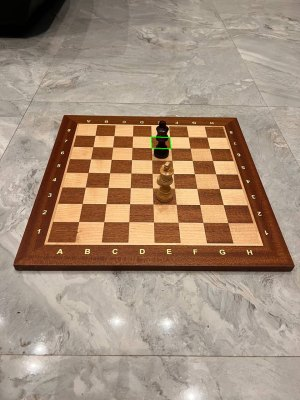
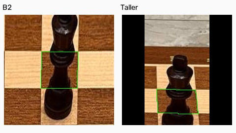
{
"42": {
"b2": {
"predicted_class_id": 0,
"probabilities": [
0.9713270335074631,
3.186405350659296e-05,
2.8403023982213743e-07,
5.550638605712984e-07,
9.731000688612748e-07,
9.821698594333837e-07,
4.374526193649642e-05,
0.0005075963988691212,
1.1805499914818017e-05,
0.000333495003862647,
3.611018839919393e-06,
3.05292503274407e-05,
0.027707525641250896
]
},
"taller": {
"predicted_class_id": 12,
"probabilities": [
0.05582236363614657,
2.6872859352856717e-05,
1.9009011757846676e-08,
2.57284777609552e-07,
7.985960852643723e-10,
4.9676432035025204e-11,
3.5193249244483427e-06,
0.019966263810107607,
4.4415161541293574e-05,
0.05076251008147408,
2.9809901269988652e-05,
1.5758972157657897e-07,
0.8733438104933997
]
}
},
"43": {
"b2": {
"predicted_class_id": 0,
"probabilities": [
0.6700966024421552,
7.475691412033332e-05,
6.414465102022888e-06,
1.9377628931155525e-05,
3.0247300997463797e-05,
7.202629121547236e-06,
7.728022905531201e-05,
0.0025174274732477162,
0.00014990731655147726,
0.0035334244644501535,
0.00030985835511463734,
0.0008027954249271549,
0.32237470535622603
]
},
"taller": {
"predicted_class_id": 12,
"probabilities": [
0.08224786971882773,
0.0004982338916147385,
1.4705634707088716e-07,
2.054314829531559e-06,
5.796367838820962e-07,
1.849146982863796e-06,
0.0003001167910251497,
0.002867821148172733,
7.723797015917174e-06,
0.0012425280167562224,
0.0017805710379025733,
0.00011195820438270844,
0.910938547239359
]
}
}
}Seed 42: B2 black_pawn; taller empty · Seed 43: B2 black_pawn; taller empty
Historical angle 75°, white_near_camera; assumed_pinhole_normal. Green outline is target ground square, not silhouette.
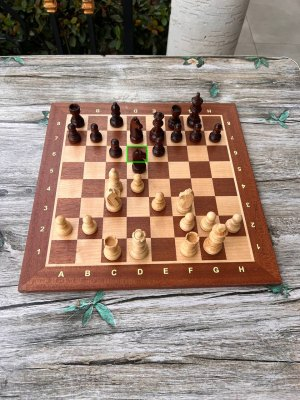
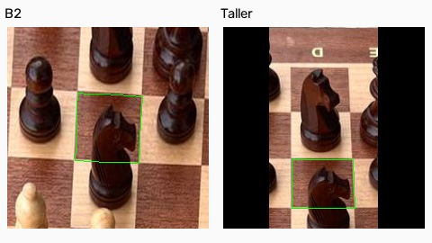
{
"42": {
"b2": {
"predicted_class_id": 7,
"probabilities": [
0.49534449083037135,
8.692918503738033e-06,
4.5593675838950294e-09,
9.457623199989454e-08,
2.991336880375802e-10,
4.1066213348856096e-10,
8.3332077260649e-09,
0.5043032483477808,
3.773757809974075e-05,
0.0003043173605657209,
1.0319911160433854e-07,
2.161296475073699e-08,
1.2799739993757466e-06
]
},
"taller": {
"predicted_class_id": 0,
"probabilities": [
0.960925183799625,
1.1720113550061873e-05,
3.596120627069898e-05,
8.200393263511638e-07,
3.393523834086649e-07,
6.766733571879558e-12,
1.1570402977616848e-08,
0.01059881632246536,
0.026482521859437492,
0.001930564319281892,
1.4039696163696364e-05,
2.3583808138214243e-09,
1.9355945349672426e-08
]
}
},
"43": {
"b2": {
"predicted_class_id": 7,
"probabilities": [
0.4344765434805419,
2.6816325235299214e-06,
1.4921696659382009e-07,
3.892471764653897e-08,
9.79299160634813e-10,
1.1282929609482785e-10,
9.126261380304052e-10,
0.562433008907438,
0.002355107082771338,
0.0007310658400398611,
3.024640680116815e-07,
2.8527606619532067e-09,
1.097593417870405e-06
]
},
"taller": {
"predicted_class_id": 0,
"probabilities": [
0.9301597289705884,
0.00011135786183373879,
0.00015967338110956823,
6.965825746546017e-07,
1.351460148537147e-06,
1.9093333704994665e-09,
5.14095785774268e-07,
0.02364884299034372,
0.04503989310194758,
0.0008539248579192597,
2.39886562750291e-05,
2.2302005053317355e-09,
2.390194001167629e-08
]
}
}
}Seed 42: B2 black_bishop; taller black_rook · Seed 43: B2 black_rook; taller black_rook
Historical angle 75°, white_right; assumed_pinhole_normal. Green outline is target ground square, not silhouette.
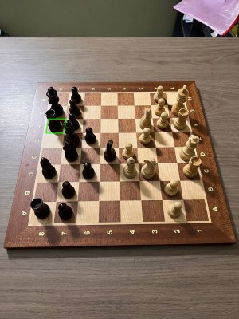
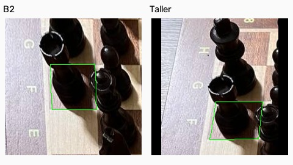
{
"42": {
"b2": {
"predicted_class_id": 9,
"probabilities": [
4.187484535307259e-06,
9.648925527606923e-06,
3.446357744029302e-06,
6.983249040921526e-05,
1.8523789905041786e-05,
1.9628301680582058e-05,
0.0004025218878351546,
0.003276928986994619,
0.002034919976442483,
0.41732029133553106,
0.3798238230317476,
0.06751714768022056,
0.1294990997514268
]
},
"taller": {
"predicted_class_id": 10,
"probabilities": [
0.0010333918030784543,
4.0475001019340273e-05,
3.4292047817427467e-06,
1.3086246467064844e-05,
0.00034869370584737357,
1.5927714298690923e-06,
2.099947562666855e-05,
0.021484594764100407,
0.003080648553587177,
0.08607223771661134,
0.6454811764989863,
0.0066091209102292795,
0.23581055334823486
]
}
},
"43": {
"b2": {
"predicted_class_id": 10,
"probabilities": [
2.1494780334463147e-07,
2.0974809922901765e-06,
1.1010681373923702e-05,
8.050160786734229e-06,
7.706075507201308e-05,
2.65853748645622e-07,
5.293497849734749e-06,
0.010015626781458446,
0.003455583815209605,
0.4347029469285277,
0.533459893202832,
0.004525144222093794,
0.013736811672251695
]
},
"taller": {
"predicted_class_id": 10,
"probabilities": [
0.0016014770782263675,
0.000178553004018148,
0.0001274776933505041,
7.123026330807952e-05,
0.0017379352158320355,
2.900915311351778e-05,
0.00022735652735944486,
0.04735551444709804,
0.02304950980489484,
0.10835790454447611,
0.6380663683971532,
0.021600153349063164,
0.1575975105221064
]
}
}
}Seed 42: B2 black_king; taller black_knight · Seed 43: B2 black_king; taller black_knight
Historical angle 75°, white_near_camera; assumed_pinhole_normal. Green outline is target ground square, not silhouette.
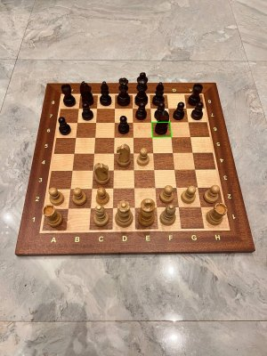
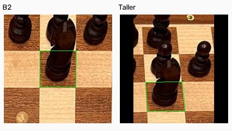
{
"42": {
"b2": {
"predicted_class_id": 12,
"probabilities": [
0.0004082784191220998,
4.051079192155909e-05,
7.223489282998535e-06,
7.765908542950797e-06,
4.4519158896646557e-07,
9.442177076223548e-07,
0.00100368331793883,
0.0013256667798010502,
0.0680996584552783,
0.025891552516822087,
4.7986878692670963e-05,
0.00037073563611734843,
0.9027955483971835
]
},
"taller": {
"predicted_class_id": 8,
"probabilities": [
4.9059088327343634e-05,
3.172956575285715e-07,
0.00010820560994995301,
4.260485180869314e-07,
3.127538003064793e-09,
5.378971197706937e-12,
7.313835405631531e-07,
0.0005700568452456886,
0.9876316853920616,
0.01035779012711892,
4.1450996379331456e-05,
3.2187320420034756e-08,
0.0012402418929637936
]
}
},
"43": {
"b2": {
"predicted_class_id": 12,
"probabilities": [
1.403231269766221e-05,
8.867755649350242e-06,
1.4279629818042171e-05,
2.1526196423506884e-06,
2.3642836608799096e-07,
1.447453540778252e-07,
0.0008012553544374324,
0.00046322282590674204,
0.2520216353567596,
0.11255805891561654,
0.0001062487434493603,
0.00045412944039571794,
0.6335557358719069
]
},
"taller": {
"predicted_class_id": 8,
"probabilities": [
0.0002059028274393245,
2.9351063512890093e-06,
0.00022105880761298782,
1.642317149244197e-06,
9.355227075814709e-08,
3.5627462849073834e-08,
0.00019079263764608018,
0.0009151345831436163,
0.9205074804628214,
0.043812904125416434,
5.974098840741474e-05,
3.742431913714036e-05,
0.03404485464514137
]
}
}
}Seed 42: B2 empty; taller white_king · Seed 43: B2 white_king; taller white_king
Historical angle 60°, white_near_camera; image_up_fallback. Green outline is target ground square, not silhouette.
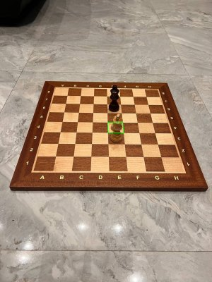
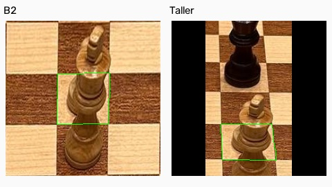
{
"42": {
"b2": {
"predicted_class_id": 0,
"probabilities": [
0.930203320029013,
0.0016697448938247073,
2.3094867691723267e-05,
0.0004586387589780911,
0.0003045292953613394,
0.005089258890764837,
0.06203284923938939,
6.532901890969773e-05,
9.734834860767597e-07,
3.2864894848481524e-05,
5.137601055436829e-08,
3.072828053648307e-05,
8.861697118541526e-05
]
},
"taller": {
"predicted_class_id": 6,
"probabilities": [
0.013972565724591,
0.004877318436166841,
0.00010238535438915847,
0.0036454421507992833,
5.490516174163364e-06,
1.8728855768606847e-05,
0.977351708145147,
2.796274949578549e-06,
5.840951832324495e-07,
3.861747321549388e-07,
1.951631290107259e-09,
3.3132736132834085e-09,
2.2589007194033384e-05
]
}
},
"43": {
"b2": {
"predicted_class_id": 6,
"probabilities": [
0.03200843609022155,
0.031886182276406314,
0.0012159234663702357,
0.018166669462693803,
0.0033000143700762344,
0.003319969890103211,
0.90982224220904,
0.00011720931461842387,
8.987730963237866e-06,
7.431366179190795e-05,
1.5668901645726162e-07,
1.5413266099185153e-05,
6.448157259930054e-05
]
},
"taller": {
"predicted_class_id": 6,
"probabilities": [
0.10984564536605361,
0.1308256584254911,
0.0009698090150199926,
0.01820801617653009,
0.00024949755581215986,
0.0003355706447062902,
0.738475563819196,
0.0006272768655248449,
5.3621605534565267e-05,
1.8647507112023383e-05,
2.816407679298532e-08,
4.6076058478365885e-07,
0.0003902040943579511
]
}
}
}